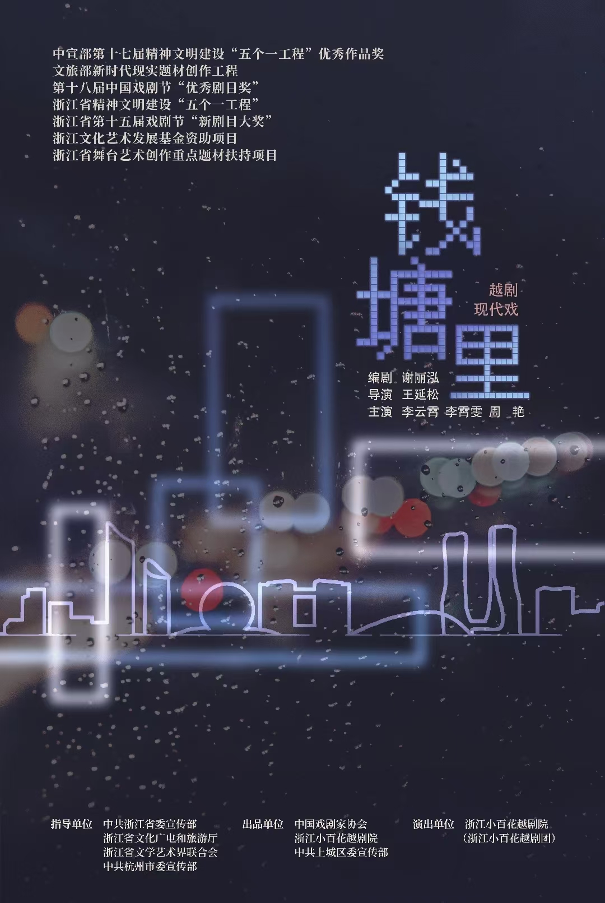
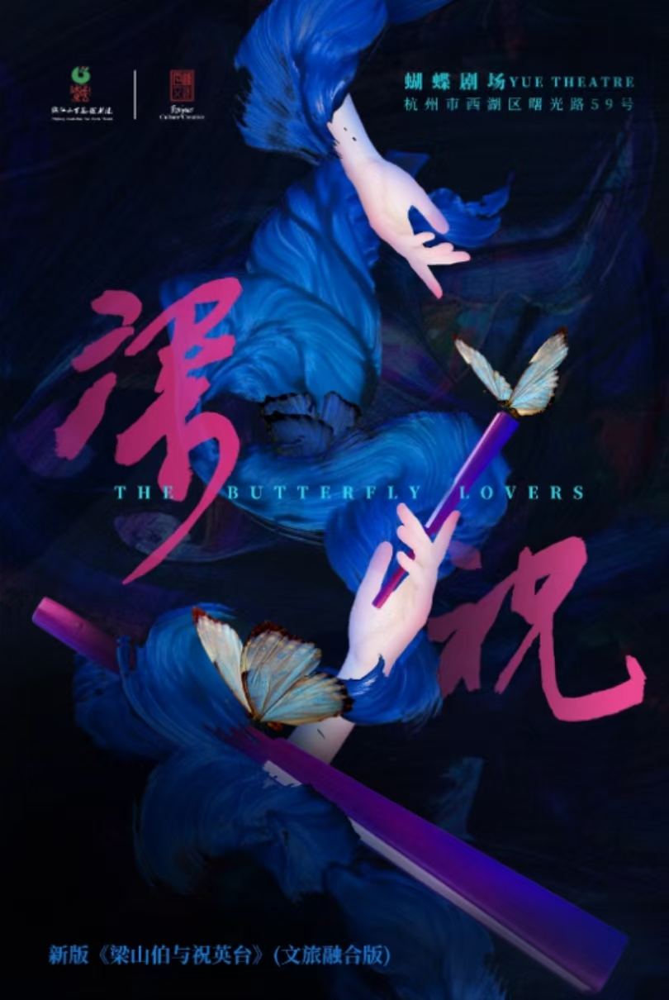
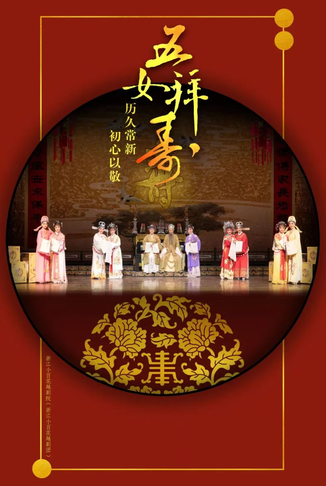

浙江小百花越剧团
浙江小百花越剧团：20世纪80年代浙江大力培养戏曲新人。1982年从全省2000多名戏曲学员中选拔400名参加全省戏曲“小百花”会演，有200名新秀获得“优秀小百花奖”和“小百花奖”。 在浙江省委与文化部门重视下，从全省70多个专业越剧团在以上两次会演获奖人员中精心挑选40名越剧新秀(平均年龄18岁)，将她们集中在浙江艺术学校进行严格训练。她们受到聘请来的越剧界与京、昆、婺等多个剧种著名艺术家的亲传技艺、悉心指导。 省内著名剧作家为之编创新剧目，并组织优秀导演、作曲、舞美、乐队人员通力合作，精心排练新剧目和优秀传统剧目。主要剧目有：大型古装戏《五女拜寿》、《汉宫怨》、《双玉蝉》等，传统折子戏《楼台会》《何文秀·哭牌·算命》《王千金祭夫》《拾玉镯》《断桥》《二堂放子》《送花楼会》《露真》等十余个。 1985年4月，浙江省成立了浙江越剧院，为下属剧团之一，内部称为浙江越剧院二团，对外称为浙江越剧院小百花越剧团。


